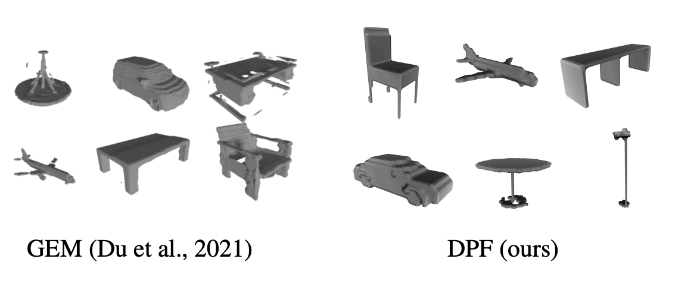
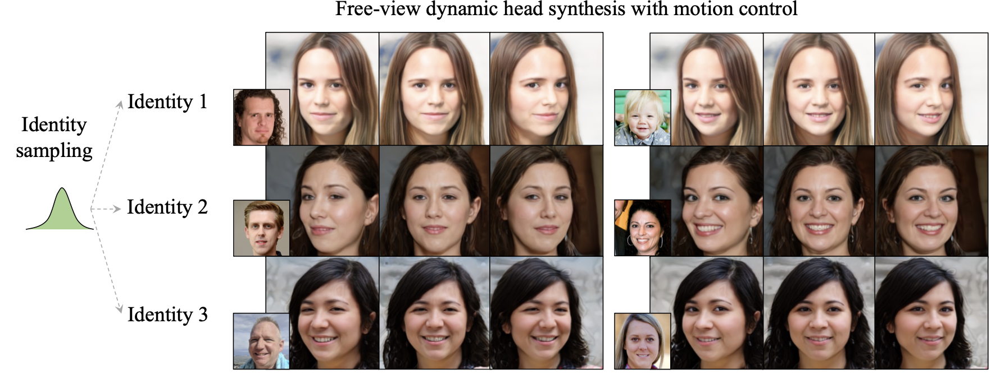
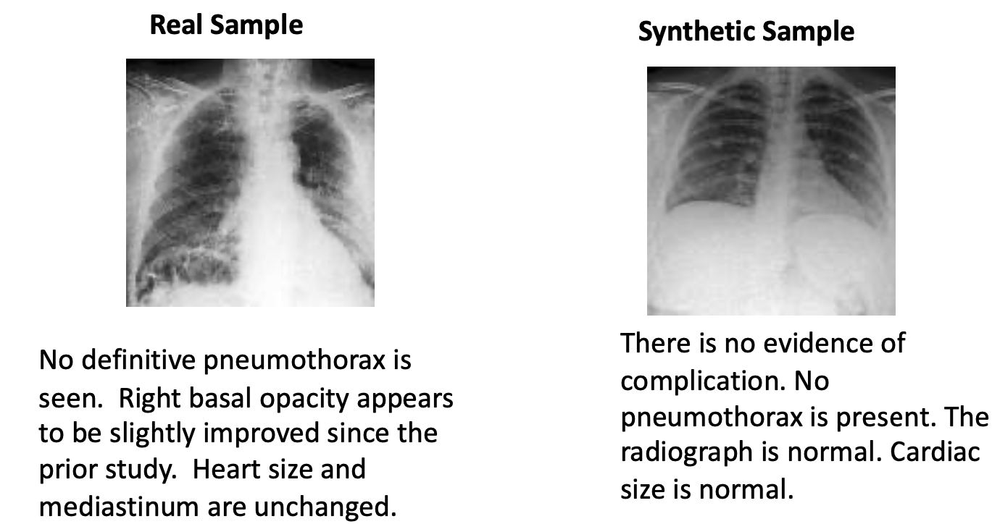
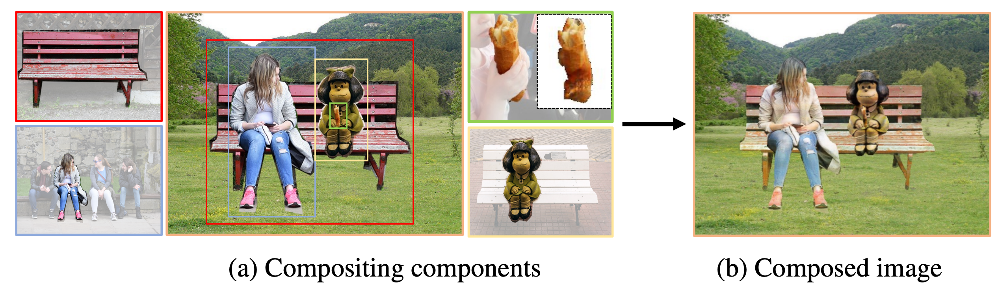
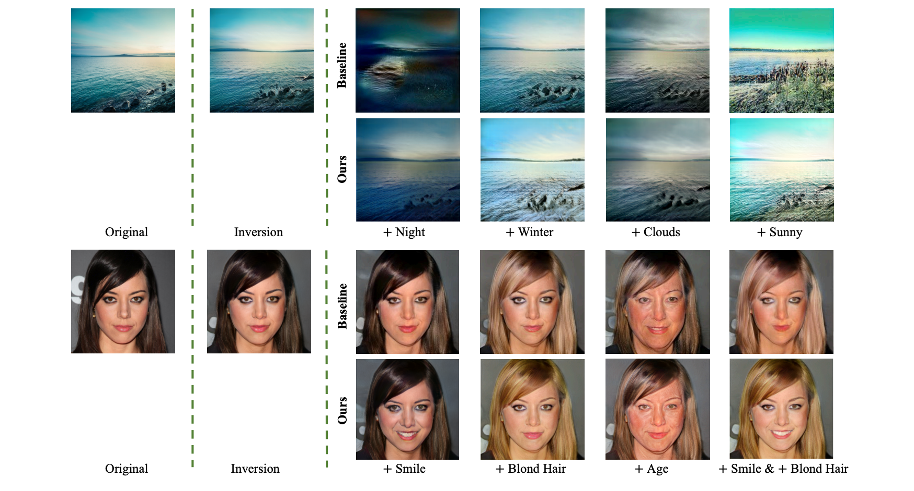
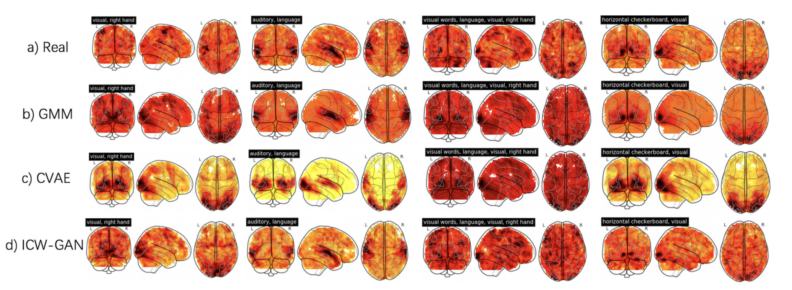
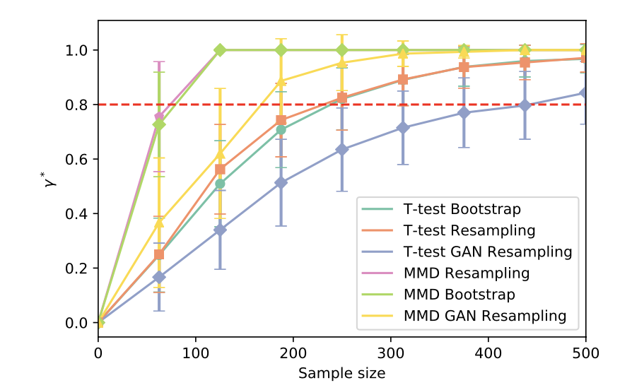
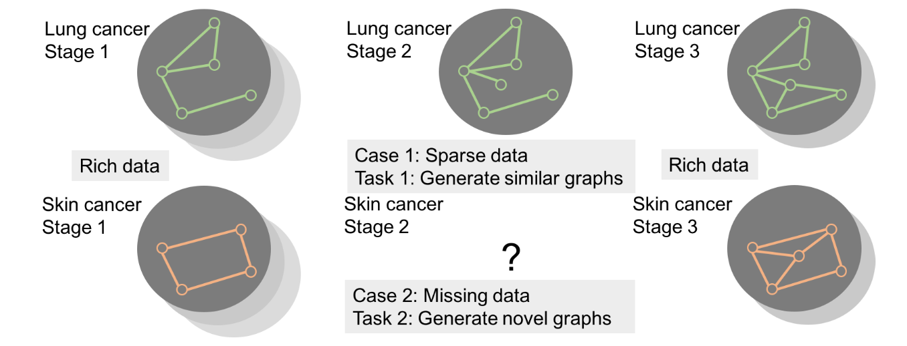

HiFA: High-fidelity Text-to-3D Generation with Advanced Diffusion Guidance (2023)
A high-fidelity text-to-3D generation model with pretrained text-to-image models as prior.
Diffusion probabilistic fields (ICLR 2023)

A diffusion model that learns distributions over continuous functions defined over metric spaces as fields.
Controllable radiance fields for dynamic face synthesis (3DV 2022)

A Controllable Radiance Field that can generate dynamic faces and human bodies with user control.
EMIXER: End-to-end Multimodal X-ray Generation via Self-supervision (MLHC 2022)

A multi-modal X-ray generative model that is trained in a self-supervised way.
AMICO: Amodal Instance Composition (BMVC 2021)

An image composition model that can blend imperfect objects onto a target image.
Controllable GANs for Image Editing via Latent Space Navigation (ICLR 2021)

A latent-space image editing work using pretrained Generative Adversarial Networks (GANs).
FMRI data augmentation via synthesis (ISBI 2019)

A Generative Adversarial Networks (GANs) specifically designed for fMRI brain data augmentation.
Synthetic Power Analyses: Empirical Evaluation and Application to Cognitive Neuroimaging (Asilomar 2019)

A methodological approach to improve statistical analysis in cognitive neuroimaging using generated datasets.
Conditional structure generation through graph variational generative adversarial nets (NeurIPS 2019)
